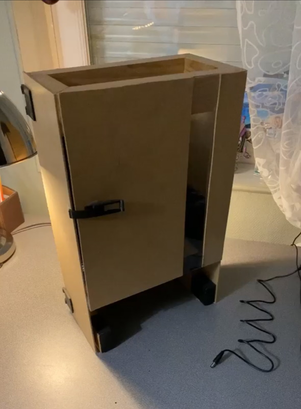

Depuis 2 ans, nous allons régulièrement surfer entre amis sur les plages de l’Atlantique. Cela
permet de se retrouver, se défouler et aussi profiter des paysages qui sont souvent magnifiques.
Nous sommes encore débutants mais nous avons l’objectif de progresser petit à petit pour un jour,
prendre une vague qui nous passe par-dessus la tête (sans être sous l'eau ...).
🏈
Rugby
Pendant 2 ans, j’ai pratiqué le rugby dans le club de l’entente des graves. Je jouais au poste de
deuxième centre ou ailier en fonction des matchs. C’est un sport que j’adore car il sollicite autant
la tactique que le physique et les amis que l’on se fait le reste souvent longtemps.
Bricolage

L’un de mes premiers projet d’électronique personnel a consisté en la création d’un « restau chat ». Il s’agit d’une
gamelle pour chat automatisée qui distribue la nourriture deux fois par jour à heure constante.
J’ai tout d’abord envisagé la conception du circuit électronique. La pièce centrale du circuit est un microcontrôleur
qui commande un servo-moteur permettant à la dalle qui soutient la nourriture de se retirer puis de se replacer.
Pour effectuer cette tâche deux fois par jours à une heure constante, le microcontrôleur est connecté à une « Real
Time Clock » qui délivre l’heure en temps réel.
Pour ce qui est de la carrosserie du « restau chat », j’ai dans un premier temps conçu le model en 3D sur Fusion360
avant de couper les planches de bois et d’imprimer les pièces 3D.
L’impression 3D permet de donner vie à des idées et de résoudre des petits problèmes du quotidien. J’ai réalisé
quelques boitiers pour protéger des cartes électroniques, cela m’a aussi beaucoup servi pour la réalisation du «
restau chat », la création d’une lumière de bureau ou encore des objets utiles pour la maison.
J’aussi réalisé quelques projets d’électronique comme l’implémentation du jeu « space invaders » sur FPGA (Artix7 sur
carte d’évaluation NexysA7 50T) et la réparation d’une enceinte JBL qui ne fonctionnait plus.
J’aime aussi de temps en temps travailler le bois comme illustré ci-dessus avec la réalisation d’un éclairage de
bureau, la création d’un dérouleur de bobines CMS ou encore une échelle pour poulailler.